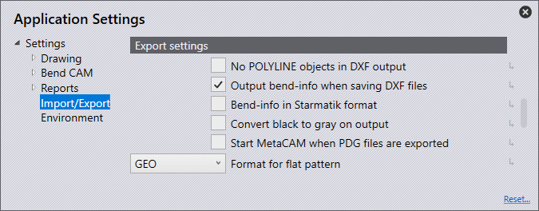

Tuonti/vienti
Tässä osiossa käsittelemme kohdan Tuontiasetukset asetuksia.

Napsauta aloitussivulta kuvaketta Asetukset
 .
.

Tuontiasetukset
Tässä osiossa käsittelemme kohdan Tuontiasetukset asetuksia. Napsauta kuvaketta Asetukset. Napsauta kohtaa Tuonti/vienti ja siirry kohtaan Tuontiasetukset.

DXF-tiedostojen yksiköt - Aseta tähän yksiköksi joko millimetrit tai tuumat.
Erilleen jätettyjen muotoelementtien enimmäisetäisyys - Aseta tämä arvo (0>1 mm). Jos tuotavan osan viivat/kaaret ovat asetettua arvoa lähempänä, ohjelmisto yhdistää ne automaattisesti tuonnin yhteydessä.
Suurin levypaksuus -Jotta suuren ohutlevyosan tunnistaminen olisi mahdollista ohutlevyn tunnistuskynnystä on nostettava. (10>40 mm) Sovellus asettaa tämän kohdan oletusasetukseksi automaattisesti 25 mm tai vastaavan tuuma-arvon riippuen käytettävästä yksiköstä.
Pisteyksiköt - Määrittelee valitun vaihtoehdon perusteella tavan, jolla pisteet on määrä tuoda.
Tuo kaikki - Tuo ja näyttää kaikki pisteet.
Ohita pisteet murtoviivoilla - Tämä asetus ohittaa kaikki polyline-objekteissa tunnistetut pisteet.
Ohita kaikki - Tämä asetus ohittaa kaikki pisteet tuonnin yhteydessä, eikä yksikään piste ilmesty tällöin näyttöön.
Jätä DXF-/DWG-tiedostojen tasot huomiotta - DXF- ja DWG-piirustukset laaditaan yleensä eri kerroksille. Tätä asetusta käytettäessä ohjelmisto ohittaa nämä kerrokset ja siirtää kaikki objektit oletuskerrokseen.
Pura 2D-piirustuksen lohkot osiin - Purkaa ryhmät tuonnin aikana.
Muunna valkoiset oliot mustiksi - Valittaessa tämä asetus sovellus muuntaa valkoiset objektit mustiksi tuonnin aikana.
Tummemmat värit DXF-tuonnin aikana - Valittaessa tämä asetus sovellus tummentaa värilliset objektit tuonnin aikana.
Poista monistetut segmentit - Valittaessa tämä asetus sovellus poistaa kaikki geometrioiden identtiset kopiot, jotka ovat löytyneet osasta tuonnin yhteydessä.
DXF-asetukset
Tässä osiossa käsittelemme kohdan DXF-asetukset asetuksia. Napsauta kuvaketta Asetukset. Napsauta kohtaa Tuonti/vienti ja siirry kohtaan DXF-asetukset.

Kulmat dxf-tiedostossa ovat avautumiskulmia. - Valitessasi tämän asetuksen sovellus käsittelee DXF-tiedoston kulmia avautumiskulmina.
Vientiasetukset
Tässä osiossa käsittelemme kohdan Vientiasetukset asetuksia. Napsauta kuvaketta Asetukset. Napsauta kohtaa Tuonti/vienti ja siirry kohtaan Vientiasetukset.

DXF-tiedostoon lähetettävät tiedot eivät sisällä POLYLINE-olioita - Yleensä suljetut muodot tulostuvat polyline-objekteina DXF-tiedostojen viennin yhteydessä. Eräät CAD-järjestelmät eivät pysty käsittelemään tällaisia tulostetietoja. Tätä asetusta käytettäessä ohjelmisto tulostaa DXF-tiedoston viivoja ja kaaria käyttäen. Nämä tiedostot ovat luettavissa kaikkialla, mutta luotavat tiedostot ovat tällöin alkuperäisiä suurempia ja myös linjojen ja kaarien väliset yhteydet katoavat.
Lähetä taivutustiedot DXF-tiedostojen viennin yhteydessä. - Valittaessa tämä asetus sovellus tulostaa viedyn DXF-tiedoston yhdessä taivutustietojen kanssa.
Bend-tiedot Starmatik-muodossa - Valittaessa tämä asetus sovellus tulostaa taivutustiedot Starmatik-muodossa. Sovellus asemoi tällöin tekstielementin täsmälleen kaikkien sellaisten viivojen keskelle, joiden on määrä olla taivutuslinjoja.
Muunna musta harmaaksi tietojen lähettämisen yhteydessä - 2D-tietojen viennin yhteydessä DXF-tiedoston objektit tulostuvat oletusasetuksen mukaan mustina. Jotta objektit olisivat helpommin tunnistettavissa CAD-ohjelmissa, sovellus tulostaa objektit tätä asetusta käytettäessä harmaina.
Käynnistä MetaCAM PDG-tiedostojen viennin yhteydessä. - Valittaessa tämä asetus sovellus konfiguroi PDG-tiedoston automaattisesti siten, että se avautuu MetaCAM-sovelluksessa.
Sommitelman tulostusmuoto - Tässä kohdassa levitysmallille voi valita vientiä varten tiedostomuodon GEO, DXF tai PDG.
Splinikäyrän konvertointi
Tässä osiossa käsittelemme kohdan Splinikäyrän konvertointi asetuksia. Napsauta kuvaketta Asetukset. Napsauta kohtaa Tuonti/vienti ja siirry asetuksiin Splinikäyrän konvertointi.

Konvertoi splinikäyrät tuonnin aikana - Tässä kohdassa voi valita, onko splinikäyrän muuntaminen pois käytöstä vai muuntaako sovellus splinikäyrät viivoiksi tai kaariksi. Kummassakin tapauksessa sovellus muuntaa jokaisen splinikäyrän yksittäiseksi polyline-objektiksi, joka sisältää viivasegmenttejä tai kaarisegmenttejä.
Tukikohtien laskenta - Luotavien viivojen tai kaarien lukumäärän laskenta tapahtuu joko solmujen välin tai poikkeaman perusteella.
Pituus viiva- tai kaarisegmenttiä kohti - Jos solmujen lukumäärän laskentaa koskevan valinnan kohdalla laskennan on valittu tapahtuvan solmujen välin perusteella, tässä kohdassa voi määritellä yksittäisen kaari- tai viivasegmentin pituuden. Splinikäyrän purkaminen tapahtuu tällöin tämän käyrän osan pituuden perusteella.
Suurin poikkeama approksimaation aikana - Jos solmujen lukumäärän laskentaa koskevan valinnan kohdalla laskennan on valittu tapahtuvan poikkeaman perusteella, tässä kohdassa voi määritellä suurimman sallitun poikkeaman alkuperäisen sileän splinikäyrän sekä viivojen tai kaarien avulla suoritettavan approksimoinnin välillä. Muodostettava polyline-objekti sisältää mahdollisimman vähän segmenttejä, samalla kun enimmäisvirhe pysyy tämän rajan sisällä.
Pura moduuli
Tässä osiossa käsittelemme kohdan Pura moduuli asetuksia. Napsauta kuvaketta Asetukset. Napsauta kohtaa Tuonti/vienti ja siirry asetuksiin Pura moduuli.
Jätä leikkausosat huomiotta - Jos tämä kytkin kytketään päälle rakenneryhmän purkamisen yhteydessä, sovellus näyttää vain ohutlevyosat, joissa on taivutuslinjoja. Jos kytkin kytketään pois päältä, sovellus näyttää kaikki kokoonpanon osat.
Komponenttien näyttö (puristemutterit, pultit, lävistysmuovaukset …) - Tämän asetuksen avulla voit valita, mitkä lisäkomponentit sovellus näyttää lisäkomponentteja sisältävän rakenneryhmän purkamisen yhteydessä.
Pois päältä - Sovellus näyttää purkamisen jälkeen vain ohutlevyosat. Sovellus ei näytä muita muttereita/pultteja.
Tuntematon - Sovellus näyttää vain komponentit, jotka ohjelmiston on vielä tunnistettava.
All - Sovellus näyttää kaikki komponentit.
Kerroksen osoitus

Tässä osiossa käsittelemme kohdan Kerroksen osoitus asetuksia. Napsauta kuvaketta Asetukset. Napsauta kohtaa Tuonti/vienti ja siirry asetuksiin Kerroksen osoitus.
Tässä osiossa osissa käytettävät ja ohjelmistoon tuotavat kerrokset on mahdollista kohdentaa automaattisesti kerrosten toimintojen (käyttötarkoituksen) perusteella.
Jos tuodussa osassa on MERKINTÖJEN kerros, tämän asetuksen perusteella sovellus voi sijoittaa kerroksen automaattisesti merkintöjen kerrokseen ohjelmistossa.
Kerroksen nimi - Tuotuun osaan sisältyvä kerros käyttää tätä kerroksen nimeä vastaavaa toimintoa, joka on asetettu paneelissa 'Käyttö'.
käytä - Tämä on kerrokseen liittyvä toiminto. Valittavissa ovat seuraavat vaihtoehdot:
Vakio - Tämä on CAM-toimintojen yhteydessä käytettävä oletuskerros.
Apuvälineet - Lisäkerros, jota ei ole tarkoitettu käytettäväksi CAM-toimintojen yhteydessä.
Valitse - Sovellus käyttää kaikkia tämän kerroksen elementtejä merkitsemiseen, ei leikkaamiseen.
Lähestymismerkki - Laserin lähestymisaseman ilmaisevia piste-elementtejä.
Sekvenssimerkki - Muotojen järjestyksen ilmaisevia tekstimerkkejä.
Muovauskeskusta - Muovauksen keskikohdan merkki (piste tai pieni L-kirjain).
Jalanjäljen muovaus - Muovauksen ääriviiva (jalanjälki).
Höyrystys - Tätä kerrosta sovellus käyttää kalvon palamisen tunnistukseen.
Pistemerkintä - Tämä kerros on varattu QR-koodeille.
Info - Tämä on varattu pelkästään informaatiolle.